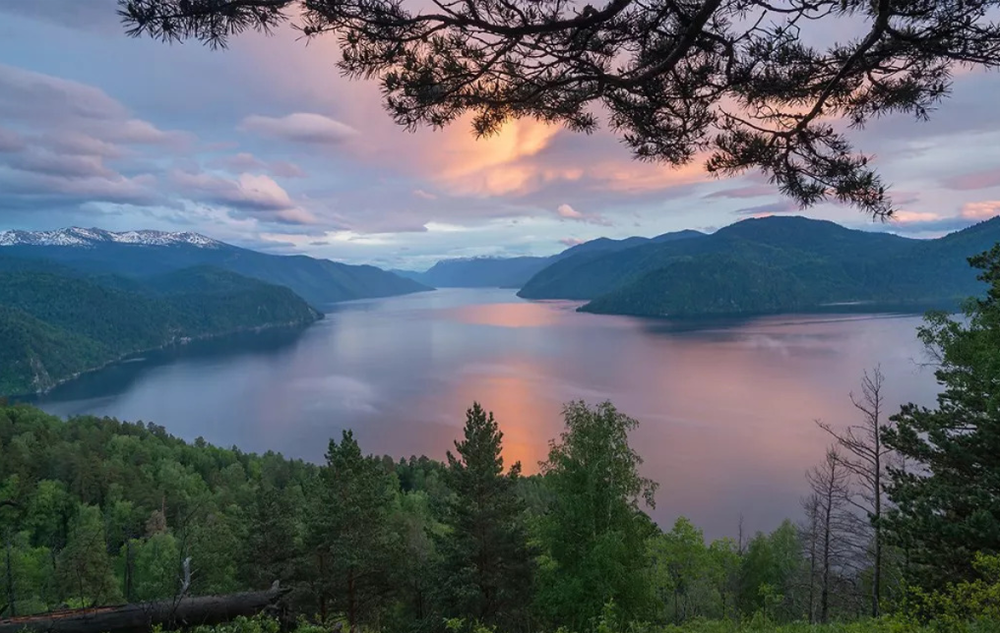

Алтайский заповедник
Алтайский заповедник расположен в горах Южной Сибири. Это край гор и стремительных горных рек, царство деревьев-исполинов и страна древних диких животных. Прогулка по горно-таежным ландшафтам заповедника завораживает своей непредсказуемостью. Вертикальные пояса, степной, лесной, субальпийский и альпийский, сменяющие друг друга при подъеме в горы, скрывают свои тайны. Даже леса на территории заповедника разные. На севере растут практически одни пихты, южнее — кедры, на юге — лиственные породы.
Национальный Алтайский заповедник — один из самых больших по территории в России, занимает почти 9,4% всего Алтайского края. Парк захватывает сразу два района — Турачакский и Улаганский.
Большая часть площади национального парка труднопроходимая и на его территорию можно заходить только с разрешения администрации и по специальным пропускам.
Интересно, что на карте Алтайского заповедника нет ни одной автомобильной трассы, за исключением небольшой просёлочной дороги из колотого щебня. Здесь отсутствуют оборудованные туристические маршруты, передвигаться следует только по специальным тропам, предварительно получив разрешение администрации.
Центральной частью заповедника принято считать поселок Яйлю, вокруг которого когда-то и стала формироваться заповедная зона. Сегодня здесь располагаются административные здания, живут работники парка и просто неравнодушные к природе люди.